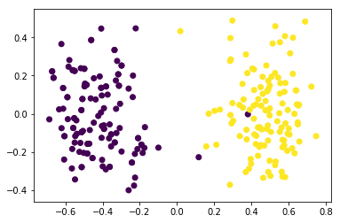

Faces are detected using current state of the art HOG(Histogram of oriented gradients) using Dlib and opencv for image processing.
Using Face Landmark Estimation algorithm we are going to detect the Facial featureand the apply tranformations to align the face. It detects 68 landmarks on the face and align the face according to those features.
Generate 128 embeddings as described in the paper facenet(https://arxiv.org/pdf/1503.03832.pdf) using the openface's implementation of facenet.
Transfer Learning can also be used to extract features from face
After applying PCA on the Embeddings generated for the dataset. gives the following result:

As we can easily observe the 2 clusters. We can use linear kernel in SVM to classify these images. Also other classifiers where used such as KNN, Random Forest.
SVM with Linear kernel, SVM with RBF Kernel, KNN, Random forest classifier where trained using SKlearn.
All data was collected using google images and "Fatkun Batch Download Image" google chrome plugin
Number of Modi images: 135
Number of Kejriwal images: 121